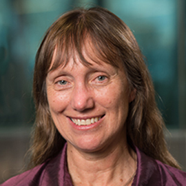

The Institute for Mathematical Sciences (IMS) at the National University of Singapore will host the Bayesian Nonparametrics (BNP) Networking Workshop from July 30 to August 2, 2024. The workshop is sponsored by the BNP section of the International Society for Bayesian Analysis. It is the third in a series that aims to:
Previous BNP Networking Workshops were held in April, 2022 in Nicosia, Cyprus and in December, 2023 in Melbourne, Australia. This year's workshop is held in conjuction with the IMS programme Interpretable Inference via Principled BNP Approaches in Biomedical Research and Beyond.
Click here for the programme and here for the list of abstracts.
To submit an abstract, please send an email to bnp-networking2024@bayesian.org with this form attached.
Eligibility
Presenters who are (undergraduate or graduate) students or have received their PhD after January 1, 2019. Priority will be given to senior PhD students and recent PhD graduates.
Application
To apply, send an email to the address bnp-networking2024@bayesian.org. The subject of the email must be
"BNP - net2024 travel award -Name Surname."
To complete the application, the
applicant's CV
must be attached to the email.
March 22
Call for abstracts for contributed talks
May 15
Due date for submission of contributed talks
Due date for travel support applications for junior researchers
May 16
Notification of acceptance (talks) and junior travel support
June 10
Early bird registrations close
July 15
Regular registrations close
Click here for the programme and here for the list of abstracts.
|
Li Ma Duke University Title: Generative modeling and nonparametric inference with trees and recursive partitions |

Kerrie Mengersen Queensland University of Technology Title: Bayesian nonparametrics in practice |
Peter Orbanz University College London Title: Exchangeability and symmetry in statistics and machine learning |
Trees and recursive partitions are most well-known in supervised learning for predictive tasks, such as regression and classification. Famous examples include CART, random forest, and boosting and their Bayesian cousins such as Bayesian CART and BART. A natural question is whether such successes can be replicated in the context of unsupervised problems and modeling unlabeled data. In this short course, I will first survey some classical Bayesian generative models and nonparametric priors based on trees and partitions, followed by several more recent examples of tree-based approaches for unsupervised learning and generative modeling, where the two primary objectives are to (i) learn the underlying nature of complex multivariate, possibly high-dimensional distributions based on unlabeled i.i.d. training data, and (ii) generate new data samples from the trained model. In these examples, the employment of trees and partitions leads to highly efficient, statistically rigorous inference algorithms that scale approximately linearly in the sample size and accommodate moderately high (e.g., hundreds) dimensions. Some examples from biomedical applications such as microbiome compositional analysis will be provided.
This tutorial will focus on a number of applications of Bayesian nonparametric modelling to substantive issues in environment, sport, health and society. These projects have all been undertaken in collaboration with organisations that want to use the answers for decision-making. The Australian Antarctic Division asked: how large a boundary should we put around an oil spill based on soil contamination? The Queensland Academy of Sport asked: can we predict injuries so our players can win well? The Australian Government called for support and strategies to manage covid. The Red Cross cares about understanding and predicting natiomal and global terrorism events. In answering these questions, we will discuss a variety of models and computational algorithms. We will also have hands-on activities and invite discussion about improvements and alternativies, implementation and translation. The research discussed in the tutorial was led by Julyan Arbel, Raiha Browning, John Worrall and Judith Rousseau.
The fundamental theorem of Bayesian statistics is a symmetry result: de Finetti's theorem characterizes distributions that are invariant under permutations. Invariance under a class of transformations is just how physicists and mathematicians define symmetry. In the last few years, symmetry is suddenly being discovered and rediscovered everywhere: In generative modeling, in data augmentation, in conformal prediction, in machine learning for science, and so forth. I will try to explain in the simplest possible terms that these ideas are all related mathematically; that exchangeability implies not just the de Finetti representation, but also the law of large numbers and the central limit theorem; that this is not only true for exchangeability, but for a much larger class of symmetries; and how all of this relates to work in machine learning that studies symmetries of functions rather than distributions. I will also sketch some open problems. There is a lot of work to be done.
| Early bird (before June 10) | Regular (before July 15) | Late (after July 15) | |
|---|---|---|---|
| ISBA student member | 150 USD | 200 USD | 250 USD |
| Other student | 200 USD | 250 USD | 300 USD |
| ISBA member | 300 USD | 350 USD | 400 USD |
| Standard | 350 USD | 400 USD | 450 USD |
The Social Aperitivo will be held on the 30th of July at 7 PM at Sofitel Sentosa Resort & Spa. Sofitel Sentosa Resort & Spa is a luxury resort hotel situated atop a cliff above Tanjong Beach on Sentosa Island in Singapore. The resort combines Western sophistication with local culture, providing a unique and lavish experience for its guests.
The cost of the Social Aperitivo, which includes canapés and free-flow alcohol, is 100 SGD (approximately 74 USD) net. Registration and payment must be completed via the following link. Guests are welcome. Please note that registration is for one person at a time. Click here for the menu for the night.
We strongly encourage participation as it is a wonderful location and offers an extremely generous price by Singapore standards. We are happy to cover the expenses for PhD students, as long as they contact the organising committee at bnp-networking2024@bayesian.org.
The workshop will take place at the Institute for Mathematical Sciences located at 3 Prince George's Park in Singapore.
The following are some recommendations for accommodation.
Dorsett Singapore
lyf one-north Singapore
NUS Guest Accommodation at Student Halls
Park Avenue Rochester
Travelodge Harbourfront
Village Hotel Albert Court
The following childcare agencies accept part-time care, subject to availability:
Note that the BNP Networking Workshop does not endorse their services and have not had any visitors who tried their services. The BNP Networking Workshop assumes no responsibility associated with childcare providers.
With 40 plus years' experience and a global presence, Meridionale Impianti supports customers to develop and implement high hand industrial process for Semiconductor, Pharmaceutical, Energy Production and many other industries. With a consolidated team of expertise located worldwide, Meridionale Impianti supports its customers locally providing design, development and commissioning of Ultra High Purity Facilities Plants for: Gas and Chemical distribution Systems, Water Reclaim Station, Power Substation HV-MV.
With a special focus of systems' efficiency and environmental concern, Meridionale Impianti also provides its State of Art technology for the industry 4.0, comprehensive of IoT Software and Hardware tools for any kind of industrial process management and monitoring. Additionally, Meridionale Impianti completes its' portfolio products with Burn-in Test equipment and Burn-in boards for the semiconductor industry.
With its vertical approach and strategic partnerships, Meridionale Impianti maintains absolute control of all its manufactured products proposing itself as global partner to improve process and manufacturing efficiency, and reducing waste and efforts.
Scientific committee
Raffaele Argiento (Chair)
Marta Catalano
David B. Dahl
Maria De Iorio
Sylvia Frühwirth-Schnatter
Catherine Forbes
Jaeyong Lee
Local organising committee
Maria De Iorio (Chair)
Pierre Alquier
Andrea Cremaschi
Cheng Li
David Nott
Wilem van den Boom
For further information regarding the Bayesian Nonparametrics Networking Workshop, please contact the organising committee at bnp-networking2024@bayesian.org.